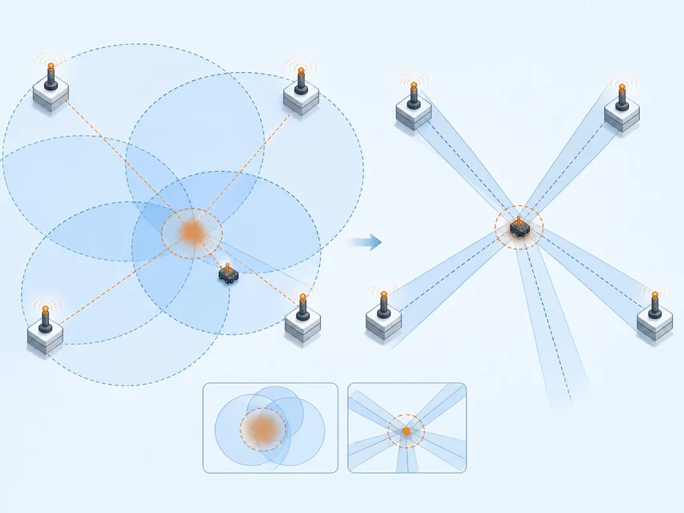
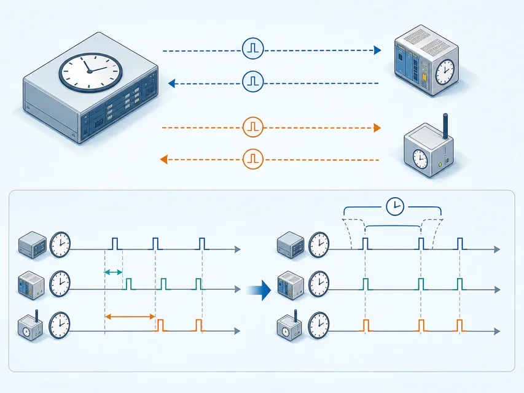

对象／事件
设备、车辆、人员或某次事件
用证据判断对象和事件的时空
 VER. 2608
Built with impress.js
VER. 2608
Built with impress.js
定位与授时要结合对象、空间、时间和证据
先明确“谁／什么”“在哪里”“什么时候”
正—位置：对象／事件 → 空间 正—时间：对象／事件 → 时刻 反：空间＋时间 → 查询对象／事件或触发行动
设备、车辆、人员或某次事件
绝对坐标，或区域、楼层、货架、相对方向
绝对时间基准，或相对启动、采样和另一事件的时刻
定位提供空间信息，授时提供可比较的时间基准；两者支持查询、排序和控制
区别在于系统是在“求位置／时间”，还是在“用时空找对象／触发动作”
对象／事件 → 空间或时间
导航更新车辆位置、记录设备采样时刻、判断事件发生地点
空间 + 时间 → 对象／事件
查找某时刻某区域的车辆，或在给定时刻让设备执行动作
全球坐标、楼层货架、事件时刻或持续时长
导航、仓储、人流计数和协同控制的容错不同
局部关联设备可以同步，不一定都要对齐全球时间
| 场景 | 请写问题方向 | 请写关键要求 |
|---|---|---|
| 车辆导航 | 填写 | 填写 |
| 仓库找货 | 填写 | 填写 |
| 两点测车速 | 填写 | 填写 |
| 车间协同动作 | 填写 | 填写 |
锚节点位置已知，目标对象的位置待求解
左：距离／距离差 → 几何约束 → 求解位置 右：到达角 AoA 方向 → 几何约束 → 求解位置
距离／距离差与 AoA 都是测量证据，不是两个必经阶段；锚点分布、同步和误差会影响求解稳定性

测量方式决定证据类型；同步与对称条件决定约束是否可靠
| 方法 | 输入证据与同步前提 | 输出证据 |
|---|---|---|
| 到达时间 TOA | 单程传播时间；收发端共享足够准确的时间基准 | 传播时间 × 波速得到目标到锚点的距离 |
| 往返时间 RTT | 往返传播时间与处理延迟；路径近似对称 | 换算目标到锚点的距离，可减弱两端未同步影响 |
| 到达时间差 TDoA | 多个同步锚点比较到达时刻 | 目标到锚点的距离差 |
| 到达角 AoA | 多天线比较到达差异 | 目标相对接收端的方向 |
先问测量输出是什么，再问它能否提供足够独立的方程
| 设计 | 请判断可能结果 | 请写优先检查 |
|---|---|---|
| 三个锚点分布均匀 | 填写 | 填写 |
| 两个锚点几乎重合 | 填写 | 填写 |
| 四个以上锚点 | 填写 | 填写 |
| 只有一个单天线、无测角能力的接收端 | 填写 | 填写 |
更多观测只有在误差可控、几何分布合理且信息独立时才会转化为更好的定位
它不直接解几何方程，而是把观测特征与环境地图匹配
离线：已知位置采集特征 → 建立环境—位置地图／模型 在线：采集未知特征 → 匹配／预测位置
Wi-Fi 或 RFID 信号特征，以及地磁、图像、气压等与位置相关的信号或物理量
在已知位置采样并保存特征向量与坐标
查找最近记录，或用监督学习／K 近邻 KNN 模型预测坐标
环境变化、设备差异、样本覆盖和维护成本会改变映射
两种方法都要说明证据如何失效、如何校正
把采集到的信号、地磁、图像或气压与地图中的记录匹配
需要现场建图，动态环境会让旧指纹失效
从已知起点出发，用步数、距离、方向、加速度计、罗盘和陀螺仪迭代位置
不依赖持续外部信号，但误差会随路径累积
室内或隧道可组合两者与外部校正，降低单一证据的长期漂移
| 场景 | 请选择优先方案 | 请写主要边界 |
|---|---|---|
| 固定仓库货架 | 填写 | 填写 |
| 有锚点的 AGV | 填写 | 填写 |
| 地下停车场步行 | 填写 | 填写 |
| 临时移动设备 | 填写 | 填写 |
选方案时要同时写出可获得的证据、准备成本和失效后的校正路径
晶体振荡器（晶振）的频率会漂移；网络延迟会影响时间戳比较
晶体振荡器（晶振）的实际频率与标称值有差异
温度、供电和工作状态改变计时行为
传播、排队、射频处理和中断响应都会改变时间戳到达时刻
独立时钟 → 漂移或传输延迟 → 时间戳难比较 → 同步与误差评估
授时不是一次性设置时间，而是持续维护关联设备可比较的时间基准
选择同步方式要看误差后果和链路条件
发送端传时间戳，接收端校准；传播、排队和处理延迟难完全分离。参考广播可减弱发送端处理延迟，仍受传播与接收影响
A 发 t₁ → B 收 t₂ → B 发 t₃ → A 收 t₄；利用近似对称往返估计时钟偏差和链路延迟，可重复测量取平均

| 场景 | 请写需要比较的时间 | 请写失步后果 |
|---|---|---|
| 住宅温度采样 | 填写 | 填写 |
| 人流方向计数 | 填写 | 填写 |
| 车辆途经时长 | 填写 | 填写 |
| 车间协同动作 | 填写 | 填写 |
同步范围和精度应由测量、排序、控制或审计的后果倒推
覆盖、能耗、基础设施和可验证性共同决定方案
| 系统 | 适合条件 | 主要边界 |
|---|---|---|
| 卫星导航 | 开阔室外，需要定位、授时或测速 | 室内、隧道、水下受遮挡；终端能耗需管理 |
| 蜂窝定位 | 有移动通信覆盖，室内外都可能使用 | 覆盖和基础设施决定可用性与精细程度 |
| 室内定位 | 仓储、商场、医院等局部空间 | 多径、遮挡、指纹维护与锚点部署 |
| 网络时间协议 NTP | 客户端可访问层级化时间源 | 延迟、上游可信度和断网需要处理 |
定位结果不等于正确、安全或获准使用；还要核对标识、回传、同步、环境和验证
系统选择取决于环境、证据、资源和后果
室外、室内、地下、海上或动态变化
锚点、信号指纹、运动传感器或权威时钟
能耗、带宽、终端算力、部署和维护
误差对导航、调度、控制、安全和隐私的影响
场景 → 证据 → 系统组合 误差验证 → 失效与恢复
| 场景 | 请选择初步组合 | 请写还要验证的内容 |
|---|---|---|
| 草原牧场 | 填写 | 填写 |
| 城市仓库 | 填写 | 填写 |
| 地下隧道 | 填写 | 填写 |
| 远海渔船 | 填写 | 填写 |
每个方案都要写出“证据从哪里来、结果如何回传、失效时做什么”
设备不同，判断结构相同
对象标识 → 时空证据 → 回传／同步 决策动作 → 误差／隐私复核
项圈中的卫星终端持续报告位置，越界规则触发告警
标签固定；同一台 AGV 在多个已知位置测距，约束独立性取决于位置分布
惯性测量单元 IMU 与步态估计在地下或隧道中延续位置，外部校正抑制漂移
案例的核心不是记住产品，而是检查对象标识、证据、行动和复核
从“得到位置”走到“结果值得使用”
01对象标识 → 定位／授时证据 → 回传与存储 → 决策动作 → 误差、权限与隐私复核确认被定位或计时的目标，以及标识是否仍然有效
说明测量、指纹、运动或同步来源与假设
定义查询、调度、告警、控制和人工复核
限制采集、访问、保留、共享和异常追责
| 用途 | 请写最小必要记录 | 请写仍需保护的内容 |
|---|---|---|
| 越界告警 | 填写 | 填写 |
| 仓库调度 | 填写 | 填写 |
| 隧道导航 | 填写 | 填写 |
| 事件审计 | 填写 | 填写 |
分析定位与授时时，按任务、证据、同步、系统和后果逐项判断